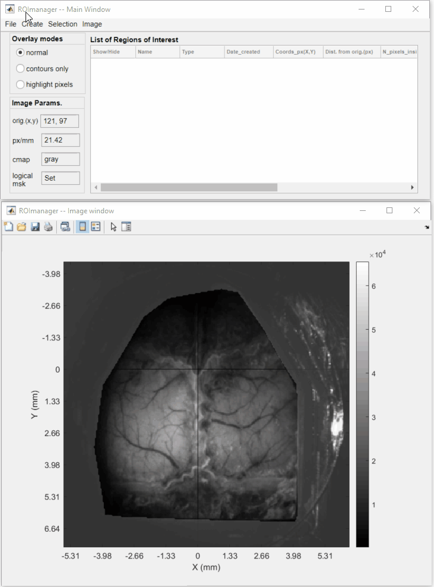
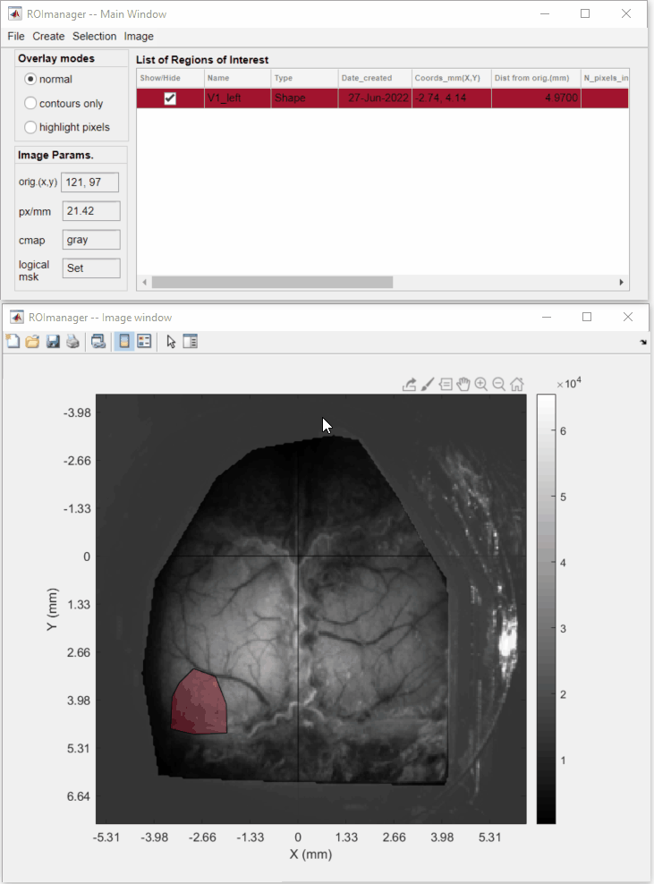
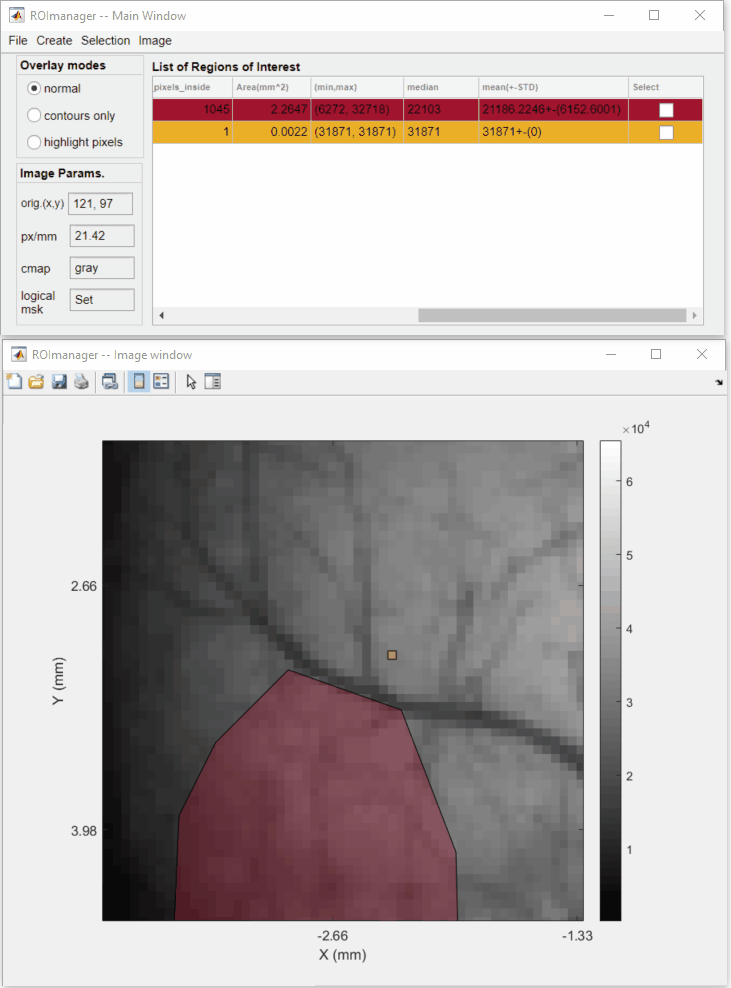
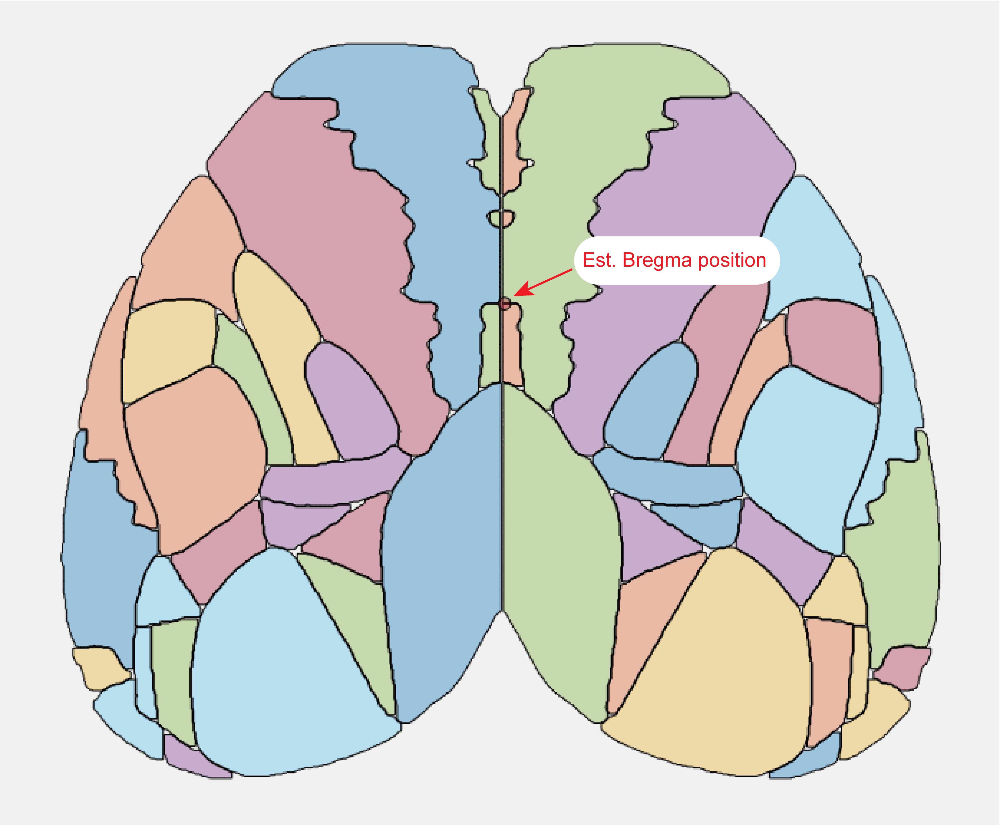

In this tutorial, you will learn how to create regions of interest (ROIs) from imaging data. ROIs are frequently used in imaging projects to delimit areas of interest such as anatomical landmarks or brain functional modules identified by neuronal activation such as in the example used in our tutorial on creating event-triggered maps.
The umIToolbox has a dedicated app that creates, edits and manages ROIs called ROImanager. The app was briefly introduced in the tutorial on recording alignment where it was used to create an Imaging Reference Frame file. There, we showed how to create a new reference point, how to set the image's pixel size and how to create a logical mask. These steps won't be covered here. For further details on the ROImanager, please refer to the app's documentation. In this tutorial, we will focus on the different ways to create ROIs and how to save them for later use on the toolbox.
In the examples below, we show how to create a polygonal ROI and a Point ROI. Here, we already opened a frame from a recording in ROImanager app and set the reference point, pixel size, colormap and logical mask.
To create a polygonal ROI:

How to draw a new polygonal ROI
Point ROIs are simply ROIs consisted of a single pixel from the image. This type of ROI does not allow any type of editing. Thus, if you want to change the location of the ROI, you can simply create a new point with the same name of the one that you want to change.
There are two ways to create a point ROI: interactively or using the X,Y coordinates.
To create an ROI for a single pixel (interactively):

How to select (interactively) a single pixel as ROI
Alternatively, you can select a pixel by it's X,Y coordinates as so:

How to select (using X,Y coordinates) a single pixel as ROI
The ROImanager app provides a preset ROI mask composed by the top view of the Mouse Allen Brain Atlas:

Preset ROIs from the Mouse Allen Brain Atlas showing the Bregma estimated position
Important
The position of the Bregma is provided here as a rough estimate. The data from the Mouse Brain atlas does not provide any anatomical landmark coordinates from the mouse skull. For more info on this, see this discussion from the Allen Brain Map Community Forum.
Tip
For a more accurate result, it is advisable to set Bregma as the image’s reference point and to set the image’s pixel size before applying the ROIs from the Mouse Brain Atlas. Once these parameters are set, the ROI mask will be automatically place the mask’s estimated Bregma position over the reference point and resize it to approximate the mask’s real size.